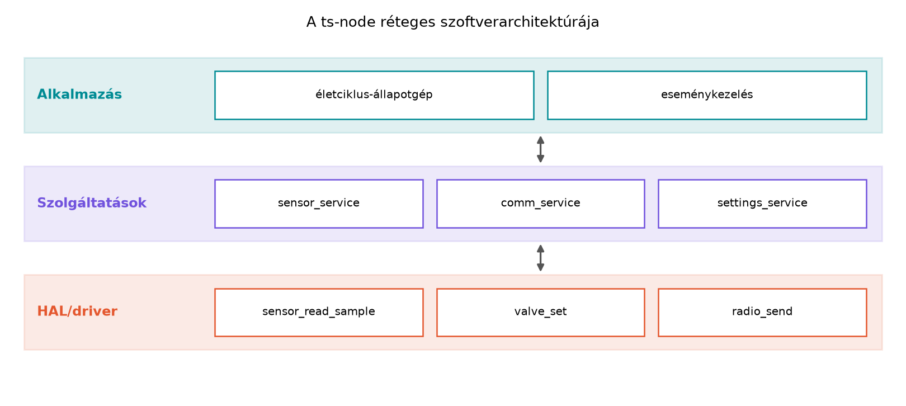
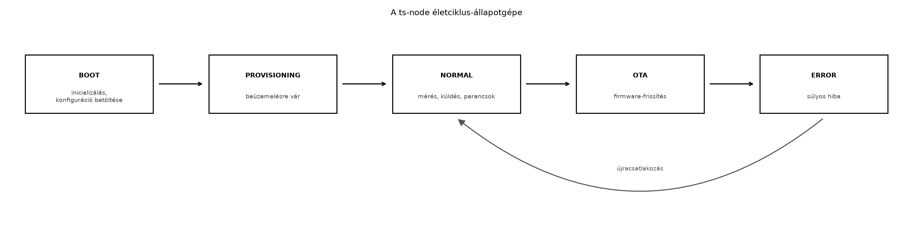

A TerraSense ts-node eszközszoftvere a korábbi
fejezetekben egyetlen, lineárisan futó C program volt: inicializálás,
szenzorolvasás, üzenetküldés, néhány másodperc várakozás. Ez a szerkezet
akkor működik, amíg minden rendben megy, de éles környezetben az eszköz
élete nem egyenes vonalú. Mi történik, ha a hálózati kapcsolat
megszakad? Ha a felhőből parancs érkezik? Ha az eszköznek gyártás utáni
beüzemelésre (provisioning) van szüksége? Ha egy hibát automatikusan
helyre kell állítani? Az ilyen helyzetekre a lineáris kód nem ad
választ: az if-else láncok gyorsan átláthatatlanná válnak, a hibakezelés
beszivárog minden sorba, és a karbantartás lehetetlenné válik.
Ebben az alfejezetben a ts-node szoftverét rétegekre
bontjuk, és az üzleti logikát egy explicit életciklus-állapotgéppel
(state machine) vezéreljük. Ez lesz az alapja annak, hogy a későbbi
OTA-frissítés, provisioning és hibatűrés jól strukturáltan illeszthető
legyen a rendszerbe.
A beágyazott eszközszoftverekben bevált gyakorlat a felelősségek függőleges rétegekre osztása. A rétegek közötti kapcsolat kizárólag interfészeken keresztül történik, így a hardverfüggő kód nem szivárog be az alkalmazási logikába, és a szolgáltatások tesztelhetők hardver nélkül is.
Definíció. A ts-node szoftverének
rétegei a következők: - HAL (Hardverabsztrakciós réteg, Hardware
Abstraction Layer) – a Zephyr periféria API-jaira épülő
illesztőréteg, amely a konkrét hardverelemeket (szenzorok, szelep,
rádió) egységes függvényhívásokkal teszi elérhetővé. Ez a réteg
tartalmazza a sensor_read_sample() függvényt és a
devicetree-ből származó eszközkötéseket. - Szolgáltatások
(services) – az egyes feladatok önálló moduljai, például a
mérési szolgáltatás (sensor service), a kommunikációs szolgáltatás
(communication service) és a konfigurációs szolgáltatás (settings
service). A szolgáltatások használják a HAL-t, de nem ismerik egymás
belső működését. - Alkalmazás (application) – az üzleti
logika, amely a szolgáltatásokat eseményvezérelt módon hívja, és az
eszköz életciklus-állapotgépét futtatja.

A rétegek közötti kommunikáció úgy valósul meg, hogy az alsóbb
rétegek függvényeit csak a közvetlenül felettük lévő réteg hívja, az
események és adatok pedig üzenetsorokon vagy callback-függvényeken
keresztül jutnak felfelé. Például a mérőszál (a korábbi Szenzorolvasás a Zephyr sensor API-val
alfejezetből) továbbra is a sensor_read_sample()
HAL-függvényt hívja, majd a mintát a sample_msgq
üzenetsorra teszi; ezt az üzenetsort most a sensor service fogyasztja,
nem pedig közvetlenül az alkalmazás.
Az életciklus-állapotgép az eszköz lehetséges működési állapotait és azok közötti átmeneteket definiálja. A cél, hogy a rendszer minden pillanatban pontosan egy állapotban legyen, és csak előre meghatározott események hatására váltson állapotot. Ez megkönnyíti a hibakeresést, a tesztelést és a bővítést.
Definíció. Az életciklus-állapotgép egy olyan modell, amely: - állapotokból (state) áll, amelyek az eszköz aktuális működési módját írják le, - eseményekből (event) áll, amelyek belső vagy külső ingerek (pl. mérés elkészült, parancs érkezett, watchdog lejárt), - átmeneti függvényből (transition function) áll, amely az aktuális állapot és a bejövő esemény alapján meghatározza a következő állapotot és a végrehajtandó műveleteket.
A ts-node esetében az alábbi életciklus-állapotokat
vezetjük be:
Az állapotok közötti átmeneteket az alábbi flow ábra szemlélteti:

Az átmeneteket a következő táblázat foglalja össze (a sorok az aktuális állapotok, az oszlopok az események):
| Állapot/esemény | EV_BOOT_DONE |
EV_PROVISIONED |
EV_NET_DOWN |
EV_NET_UP |
EV_ENTER_OTA |
EV_OTA_DONE |
EV_ERROR |
|---|---|---|---|---|---|---|---|
| BOOT | → PROVISIONING | – | – | – | – | – | → ERROR |
| PROVISIONING | – | → NORMAL | – | – | – | – | → ERROR |
| NORMAL | – | – | → ERROR (vagy retry) | – | → OTA | – | → ERROR |
| OTA | – | – | – | – | – | → NORMAL | → ERROR |
A BOOT állapotból EV_BOOT_DONE után a
rendszer megvizsgálja a mentett konfigurációt: ha a
provisioned flag igaz, akkor EV_PROVISIONED
eseményt generál, és közvetlenül NORMAL-ba lép; különben
PROVISIONING-ba kerül. A PROVISIONING
állapotban a beüzemelési szolgáltatás vár a felhő vagy a helyi
konfigurációs interfész parancsára, majd EV_PROVISIONED
eseményre vált.
A NORMAL állapot a legösszetettebb: itt fut a mérési
ciklus, a hálózati küldés és a parancsfeldolgozás. Ha a hálózat
megszakad, az eszköz nem ugrik azonnal hibába, hanem például
újrapróbálkozási logikát futtat (EV_NET_DOWN → retry
timer). Csak tartós hiba esetén vált ERROR-ba.
Az eseményeket egy központi üzenetsor, az app_event_q
fogadja. Minden esemény egy app_event_t struktúra, amely
tartalmazza az esemény típusát és opcionálisan adatokat (pl. hiba kódja,
mérés eredménye). Az állapotgép feldolgozó függvénye a
while (1) ciklusban blokkolva olvassa ezt az üzenetsort, és
meghívja az aktuális állapot eseménykezelőjét.
A Zephyr k_msgq üzenetsora (lásd Szinkronizáció és üzenetátadás: mutex, szemafor,
üzenetsor, work queue) ideális eszköz az eseményvezérelt
tervezéshez: a szálak és az ISR-ek eseményeket küldenek az
alkalmazás-üzenetsorba, így az állapotgép egyetlen szálban, szinkron
módon dolgozza fel azokat, elkerülve a konkurens adat-hozzáférést. A
k_msgq mérete és az üzenetek mérete rögzített, ami
determinisztikus memória-felhasználást eredményez.
Az eszköz konfigurációját (pl. site ID, node ID, provisioned flag)
nem áramtalanítás-biztos memóriában, hanem flash-ben tároljuk. A Zephyr
settings alrendszere erre egy egységes API-t ad, amely a
háttérben NVS-t (Non-Volatile Storage) vagy más hátteret használ. A
laborban a settings alrendszert konfiguráljuk, és az
egyszerű kulcs-érték párok tárolását mutatjuk be. Az NVS réteg a flash
feletti, ciklusbiztos fájlrendszerszerű tárolást valósít meg.
Definíció. Az NVS (Non-Volatile Storage) egy
flash-alapú tároló, amelyet a Zephyr a konfigurációs adatok megőrzésére
biztosít. A settings alrendszer az NVS fölé helyezett
absztrakció, amely kulcs-érték párok tárolását és visszatöltését teszi
lehetővé.
A rétegezés és az állapotgép bevezetése nem mindig szükséges. Az alábbi táblázat a megfontolandó szempontokat foglalja össze:
| Szempont | Egyszerű lineáris kód | Rétegezett + állapotgép |
|---|---|---|
| Komplexitás | Alacsony | Magasabb kezdő ráfordítás |
| Hibakezelés | Nehezen átlátható | Központosított, állapotonként elkülönített |
| Bővíthetőség | Korlátozott | Új állapotok/események hozzáadása lokális |
| Tesztelhetőség | Csak teljes integráció | Rétegenként és állapotonként izolálható |
| Memória/futásidő | Kisebb | Kicsit nagyobb (üzenetsor, táblák) |
| Ajánlott, ha | Rövid életű, egyfunkciós eszköz | Hálózatba kötött, frissíthető, hibatűrő eszköz |
A ts-node esetében a hálózati kapcsolat, a provisioning
és az OTA miatt egyértelműen az állapotgépes megközelítés a helyes
választás.
A konfiguráció tárolására használható NVS helyett közönséges változó
is, de akkor az újraindítás után elvesznek a beállítások. Az NVS
ciklusbiztos, és a settings API-val egyszerűen használható.
Hátránya, hogy a flash írási ciklusai korlátozottak, ezért a gyakran
változó adatokat nem szabad NVS-be írni.
ts-node állapotgépMunkakönyvtár:
mkdir -p ~/iot-labor/i018 && cd ~/iot-labor/i018
A labor célja, hogy a korábbi Szenzorolvasás a Zephyr sensor API-val alfejezetből származó szenzorolvasó kódot rétegekre bontva, életciklus-állapotgéppel vezérelje. A kiinduló fájlokat átmásoljuk, majd módosítjuk.
cp -r ~/iot-labor/i013/src ~/iot-labor/i018/
cp ~/iot-labor/i013/CMakeLists.txt ~/iot-labor/i018/
cp ~/iot-labor/i013/prj.conf ~/iot-labor/i018/
mkdir -p ~/iot-labor/i018/boards
cp ~/iot-labor/i013/boards/native_sim.overlay ~/iot-labor/i018/boards/A ~/iot-labor/i018/prj.conf fájlhoz adjuk hozzá a
következő sorokat (a már meglévő CONFIG_SENSOR_SIM=y és
egyéb beállítások mellé):
CONFIG_SETTINGS=y
CONFIG_NVS=y
CONFIG_FLASH=y
CONFIG_FLASH_MAP=y
CONFIG_MPU_ALLOW_FLASH_WRITE=yA native_sim board flash-szimulációt biztosít, így az
NVS a szimulált flash-ben működik.
Hozzuk létre a src/app_state_machine.h fájlt a következő
tartalommal:
#ifndef APP_STATE_MACHINE_H
#define APP_STATE_MACHINE_H
#include <zephyr/kernel.h>
/* Állapotok */
typedef enum {
APP_STATE_BOOT,
APP_STATE_PROVISIONING,
APP_STATE_NORMAL,
APP_STATE_OTA,
APP_STATE_ERROR
} app_state_t;
/* Események */
typedef enum {
APP_EVT_BOOT_DONE,
APP_EVT_PROVISIONED,
APP_EVT_NET_DOWN,
APP_EVT_NET_UP,
APP_EVT_ENTER_OTA,
APP_EVT_OTA_DONE,
APP_EVT_ERROR
} app_event_type_t;
typedef struct {
app_event_type_t type;
int error_code;
} app_event_t;
/* Az alkalmazás-üzenetsor, amelyre az események érkeznek */
extern struct k_msgq app_event_q;
/* Az állapotgép inicializálása és fő ciklusa */
void app_state_machine_start(void);
#endif /* APP_STATE_MACHINE_H */A src/app_state_machine.c fájl tartalmazza az állapotgép
logikáját. A szolgáltatások külön modulokban vannak, de a laborban a
rövidség kedvéért a szolgáltatásfüggvényeket is ugyanebben a fájlban
definiáljuk (később szétválaszthatók). A HAL-t a korábbi
sensor_read_sample() jelenti.
#include "app_state_machine.h"
#include <zephyr/logging/log.h>
#include <zephyr/settings/settings.h>
#include <zephyr/kernel.h>
#include <string.h>
LOG_MODULE_REGISTER(app_sm, LOG_LEVEL_INF);
/* Alkalmazás-üzenetsor: 8 db app_event_t méretű üzenet tárolására */
K_MSGQ_DEFINE(app_event_q, sizeof(app_event_t), 8, 4);
/* A szolgáltatások interfészei */
static void sensor_service_start(void);
static void comm_service_start(void);
static void settings_service_load(void);
static void settings_service_save_provisioned(bool value);
static bool settings_service_is_provisioned(void);
/* A minta, amit a korábbi laborból hozunk */
struct ts_sample {
uint32_t seq;
int64_t ts_ms;
double temperature;
double humidity;
double soil_moisture;
};
/* A HAL függvény, amelyet az i013-ból ismerünk */
extern int sensor_read_sample(struct ts_sample *sample);
extern struct k_msgq sample_msgq;
/* Állapotgép változó */
static app_state_t current_state = APP_STATE_BOOT;
static bool provisioned = false;
/* Állapot-eseménykezelő függvények (forward deklaráció) */
static void handle_state_boot(app_event_t *evt);
static void handle_state_provisioning(app_event_t *evt);
static void handle_state_normal(app_event_t *evt);
static void handle_state_ota(app_event_t *evt);
static void handle_state_error(app_event_t *evt);
/* A settings kulcsa */
#define SETTINGS_KEY_PROVISIONED "provisioned"
/* Settings callback: a load során visszatölti az értéket */
static int settings_get_cb(const char *key, size_t len,
settings_read_cb read_cb, void *cb_arg)
{
if (strncmp(key, SETTINGS_KEY_PROVISIONED, len) == 0) {
uint8_t val;
if (read_cb(cb_arg, &val, sizeof(val)) == sizeof(val)) {
provisioned = (val != 0);
LOG_INF("provisioned loaded: %d", provisioned);
}
}
return 0;
}
/* Settings backend regisztráció */
SETTINGS_STATIC_HANDLER_DEFINE(app_settings, "app", NULL, settings_get_cb, NULL, NULL);
static void settings_service_load(void)
{
int ret = settings_load();
if (ret) {
LOG_ERR("settings_load failed: %d", ret);
} else {
LOG_INF("settings loaded");
}
}
static void settings_service_save_provisioned(bool value)
{
int ret = settings_save_one("app/provisioned", &value, sizeof(value));
if (ret) {
LOG_ERR("settings_save_one failed: %d", ret);
}
}
static bool settings_service_is_provisioned(void)
{
return provisioned;
}
static void sensor_service_start(void)
{
/* Itt indul a mérőszál, amely a sample_msgq-re küldi a mintákat.
* A mérőszál implementációját az i013-ból vettük át. */
LOG_INF("sensor_service started");
}
static void comm_service_start(void)
{
/* Itt indul a kommunikációs szál, amely az MQTT-küldést végzi majd.
* Most csak logoljuk, hogy elindult. */
LOG_INF("comm_service started");
}
/* Állapotkezelők */
static void handle_state_boot(app_event_t *evt)
{
if (evt->type != APP_EVT_BOOT_DONE) {
LOG_WRN("Unexpected event %d in BOOT", evt->type);
return;
}
settings_service_load();
if (settings_service_is_provisioned()) {
LOG_INF("Already provisioned, go to NORMAL");
current_state = APP_STATE_NORMAL;
/* generate APP_EVT_PROVISIONED to start normal */
app_event_t e = { .type = APP_EVT_PROVISIONED };
k_msgq_put(&app_event_q, &e, K_NO_WAIT);
} else {
LOG_INF("Not provisioned, go to PROVISIONING");
current_state = APP_STATE_PROVISIONING;
}
}
static void handle_state_provisioning(app_event_t *evt)
{
if (evt->type == APP_EVT_PROVISIONED) {
settings_service_save_provisioned(true);
LOG_INF("Provisioning done, go to NORMAL");
current_state = APP_STATE_NORMAL;
/* Indítsuk el a szolgáltatásokat */
sensor_service_start();
comm_service_start();
} else {
LOG_WRN("Unexpected event %d in PROVISIONING", evt->type);
}
}
static void handle_state_normal(app_event_t *evt)
{
switch (evt->type) {
case APP_EVT_NET_DOWN:
LOG_WRN("Network down, entering retry logic");
/* Itt például elindítunk egy retry timer-t, de most nem teszünk semmit */
break;
case APP_EVT_NET_UP:
LOG_INF("Network up");
break;
case APP_EVT_ENTER_OTA:
LOG_INF("Entering OTA state");
current_state = APP_STATE_OTA;
break;
case APP_EVT_ERROR:
LOG_ERR("Fatal error, entering ERROR state");
current_state = APP_STATE_ERROR;
break;
default:
LOG_WRN("Unexpected event %d in NORMAL", evt->type);
}
}
static void handle_state_ota(app_event_t *evt)
{
if (evt->type == APP_EVT_OTA_DONE) {
LOG_INF("OTA done, go back to NORMAL");
current_state = APP_STATE_NORMAL;
} else if (evt->type == APP_EVT_ERROR) {
LOG_ERR("OTA error, entering ERROR state");
current_state = APP_STATE_ERROR;
} else {
LOG_WRN("Unexpected event %d in OTA", evt->type);
}
}
static void handle_state_error(app_event_t *evt)
{
LOG_ERR("Device in ERROR state; only reboot helps");
/* Nem teszünk mást, csak várunk a watchdogra vagy manuális resetre */
}
/* Fő állapotgép ciklus */
void app_state_machine_start(void)
{
LOG_INF("State machine started in BOOT state");
app_event_t evt;
/* Boot esemény generálása */
app_event_t boot_evt = { .type = APP_EVT_BOOT_DONE };
k_msgq_put(&app_event_q, &boot_evt, K_NO_WAIT);
while (1) {
k_msgq_get(&app_event_q, &evt, K_FOREVER);
LOG_INF("Processing event %d in state %d", evt.type, current_state);
switch (current_state) {
case APP_STATE_BOOT:
handle_state_boot(&evt);
break;
case APP_STATE_PROVISIONING:
handle_state_provisioning(&evt);
break;
case APP_STATE_NORMAL:
handle_state_normal(&evt);
break;
case APP_STATE_OTA:
handle_state_ota(&evt);
break;
case APP_STATE_ERROR:
handle_state_error(&evt);
break;
default:
LOG_ERR("Invalid state %d", current_state);
}
}
}A fenti kódban a sample_msgq és a
sensor_read_sample külső deklarációval szerepel, mert
azokat a korábbi laborban definiáltuk. A laborban a mérőszál továbbra is
fut, és a mintákat a sample_msgq-ra teszi; ezt egy másik
szál vagy a normál állapot eseményfeldolgozója fogja fogyasztani (a
laborban most nem implementáljuk a fogyasztást, mert a cél az állapotgép
vázának bemutatása).
main.c módosításaA src/main.c fájlban az alkalmazás inicializálása után
elindítjuk az állapotgépet, és egy mérőszálat is létrehozunk, amely
időnként mintát készít. A mérőszál a korábbi Szenzorolvasás a Zephyr sensor API-val logikáját
használja, de most a sample_msgq-ra teszi a mintát.
#include <zephyr/kernel.h>
#include <zephyr/logging/log.h>
#include "app_state_machine.h"
LOG_MODULE_REGISTER(main, LOG_LEVEL_INF);
/* A mérőszál */
static void sensor_thread(void *arg1, void *arg2, void *arg3)
{
struct ts_sample sample;
uint32_t seq = 0;
while (1) {
if (sensor_read_sample(&sample) == 0) {
sample.seq = seq++;
sample.ts_ms = k_uptime_get();
k_msgq_put(&sample_msgq, &sample, K_FOREVER);
LOG_INF("Sample seq=%u temp=%.2f hum=%.2f soil=%.2f",
sample.seq, sample.temperature, sample.humidity,
sample.soil_moisture);
} else {
LOG_ERR("Sensor read failed");
}
k_sleep(K_SECONDS(2));
}
}
K_THREAD_DEFINE(sensor_tid, 1024, sensor_thread, NULL, NULL, NULL, K_PRIO_PREEMPT(8), 0, 0);
void main(void)
{
LOG_INF("ts-node starting");
app_state_machine_start();
}Figyeljük meg, hogy a main() függvény belép az
állapotgép végtelen ciklusába, így a mérőszál külön szálon fut. A
sensor_thread a sensor_read_sample()
HAL-függvényt hívja, ami a korábbi laborban már működött.
cd ~/iot-labor/i018
west build -b native_sim .
./build/zephyr/zephyr.exeVárt kimenet (részlet):
[00:00:00.000,000] <inf> main: ts-node starting
[00:00:00.000,000] <inf> app_sm: State machine started in BOOT state
[00:00:00.000,000] <inf> app_sm: Processing event 0 in state 0
[00:00:00.000,000] <inf> app_sm: Not provisioned, go to PROVISIONING
[00:00:00.000,000] <inf> sensor_service: started (if provisioned)
...A kimenetben az eszköz a BOOT állapotból PROVISIONING-ba lép, mert a
provisioned érték kezdetben hamis. Ha a settings betöltése
sikeres, és a kulcs igaz értéket tartalmaz, akkor közvetlenül NORMAL-ba
ugrik (a laborban ez nem történik meg, mert még nincs elmentett
érték).
A labor működésének ellenőrzéséhez a log üzeneteket figyeljük. A logból láthatóvá kell válnia, hogy az állapotgép melyik eseményt milyen állapotban dolgozza fel, és hogyan vált át.
Tipikus hibatünetek és megoldások:
| Hibatünet | Ok | Javítás |
|---|---|---|
| Az állapotgép nem vált át, az esemény “Unexpected event” logot ír | Az esemény típusa nem megfelelő, vagy az állapotkezelő nem ismeri a kombinációt | Ellenőrizd az esemény enum értékét, és hogy az adott állapotban milyen eseményeket várunk; javítsd az átmeneteket |
| Az NVS-ből nem töltődik be a provisioned érték | A settings kulcsa nem egyezik, vagy a regisztrált handler nem megfelelő | Ellenőrizd a SETTINGS_STATIC_HANDLER_DEFINE nevét és a
kulcs formátumát ("app/provisioned"), valamint a
settings_get_cb visszatérési értékét |
A sample_msgq nem definiált linkelési hibát okoz |
A korábbi Szenzorolvasás a Zephyr sensor
API-val kódban a main.c-ben volt a definíció, de most
nem másoltuk át |
Másold át a Szenzorolvasás a Zephyr sensor
API-val src/main.c-ből a sample_msgq
definícióját, vagy definiáld újra a app_state_machine.c-ben
(de ügyelj a duplikáció elkerülésére) |
A build nem találja a sensor_read_sample függvényt |
A függvény korábbi definíciója hiányzik | Másold át a Szenzorolvasás a Zephyr sensor
API-val src/main.c-ből a
sensor_read_sample implementációját, vagy hozd létre a HAL
réteget külön fájlban |
Az állapotgép futtatása ISR-ből. Sokan
megpróbálják az állapotátmeneteket közvetlenül megszakításból hívni. Ez
veszélyes, mert az ISR-ekben nem szabad blokkoló hívást végezni, és a
kontextusváltás korlátozott. A helyes megoldás, hogy az ISR csak egy
eseményt küld az üzenetsorra (k_msgq_put), és az állapotgép
szálon dolgozza fel.
A rétegek közötti közvetlen hívás. Gyakori hiba, hogy az alkalmazás közvetlenül eléri a HAL függvényeket, vagy a szolgáltatások egymás belső adatait manipulálják. Ez összekuszálja a függőségeket, és megnehezíti a tesztelést. Mindig interfészeken keresztül kommunikáljunk, és az adatokat üzenetsorokon vagy visszahívásokon keresztül adjuk át.
A settings/NVS írásának gyakorisága. A flash-nek korlátozott az írási ciklusa, ezért a provisioned flag-et csak akkor írjuk, amikor valóban megváltozik. Nem szabad minden ciklusban menteni például az aktuális hőmérsékletet NVS-be; az ilyen gyorsan változó adatokat RAM-ban vagy külső tárban kell tartani.
Hiányzó várakozás a settings betöltésére. A
settings_load() aszinkron is lehet (bár alapértelmezésben
szinkron), de a konfigurációra csak a betöltés befejezése után
támaszkodhatunk. Ha a rendszer azelőtt használja a
provisioned változót, mielőtt a callback lefutott volna,
hibás döntést hozhat. A laborban a settings_service_load()
hívása után közvetlenül olvassuk a változót, ami működik, de élesben
érdemes szinkronizációs eseményt használni.
Ismertesd röviden, miért előnyös az életciklus-állapotgép használata
a ts-node esetében a lineáris kóddal szemben! Milyen
hátrányai vannak az állapotgépes megközelítésnek egyszerű
eszközökön?
Tervezd meg a NORMAL állapot belső eseménykezelését egy
retry logikával! Hányféleképpen lehet megszakadni a hálózatnak, és
milyen állapotváltozók kellenek a retry számlálóhoz? Tervezd meg a retry
állapotátmeneteket egy táblázatban.
Egészítsd ki a labor kódját egy APP_EVT_LOW_BATTERY
eseménnyel, amely a NORMAL állapotban ERROR-ba
viszi az eszközt, és logolja ki az akkumulátor töltöttségét! Végül a
main()-ban szimuláld az eseményt néhány másodperc múlva egy
időzítővel.
Vizsgáld meg, mi történik, ha a settings betöltése közben az NVS
flash nem elérhető (pl. törölt flash). Hogyan lehetne kezelni ezt a
hibát az állapotgépben? Javasolj egy APP_EVT_CONFIG_ERROR
eseményt, és implementáld a kezelését!
Az életciklus-állapotgép központosítja a viselkedést: minden állapotban csak azok az események engedélyezettek, amelyek az adott állapotban értelmesek. Ez megakadályozza a váratlan átmeneteket, és a hibakeresést is strukturálja – ha egy esemény nem várt, azt logoljuk. A lineáris kódban az if-else láncok gyorsan átláthatatlanná válnak, és könnyű kihagyni egy kombinációt. Hátránya az állapotgépnek, hogy növeli a memória- és futásidő-igényt (táblák, üzenetsor), és kezdeti tervezést igényel. Egyszerű, egyfunkciós eszközön, ahol nincs sok bemenet, felesleges komplexitást jelent.
A hálózat megszakadása lehet átmeneti (pl. rövid interferencia) vagy
tartós (pl. nincs térerő). A retry logika állapotváltozói:
retry_count, retry_max (pl. 5),
retry_interval (pl. 30 s). Átmenetek:
| Állapot | Esemény | Következő | Művelet |
|---|---|---|---|
| NORMAL | NET_DOWN | RETRY | retry_count = 0, retry timer indítása |
| RETRY | NET_UP | NORMAL | kommunikáció újraindítása |
| RETRY | RETRY_TIMEOUT | RETRY | retry_count++; ha retry_count >= retry_max → ERROR |
| RETRY | ERROR | ERROR | – |
Az alábbi kódrészlet mutatja az APP_EVT_LOW_BATTERY
esemény hozzáadását és kezelését. Az esemény az enum-hoz kerül, a
handle_state_normal pedig bővül:
/* az enum-ban: */
APP_EVT_LOW_BATTERY,
/* a handle_state_normal-ben: */
case APP_EVT_LOW_BATTERY:
LOG_ERR("Low battery, entering ERROR state");
current_state = APP_STATE_ERROR;
break;
/* a main()-ben egy időzítővel generáljuk az eseményt:
* (a main végén, az app_state_machine_start() hívása előtt,
* vagy egy külön szálban) */
static void battery_sim_thread(void*, void*, void*)
{
k_sleep(K_SECONDS(10));
app_event_t evt = { .type = APP_EVT_LOW_BATTERY, .error_code = -1 };
k_msgq_put(&app_event_q, &evt, K_FOREVER);
}
K_THREAD_DEFINE(battery_sim_tid, 512, battery_sim_thread, NULL, NULL, NULL,
K_PRIO_PREEMPT(8), 0, 0);Ha a settings betöltése közben az NVS flash meghibásodik, a
settings_load() hiba kódot ad vissza. Ilyenkor a rendszer
nem tudja eldönteni, hogy érvényes konfigurációval rendelkezik-e. Az
állapotgépnek ERROR állapotba kellene lépnie, de nehogy
végtelen újraindulási ciklus alakuljon ki. Javaslat: vezessük be az
APP_EVT_CONFIG_ERROR eseményt, amely a BOOT állapotból
ERROR-ba visz, és a hiba naplózása után újraindítja az eszközt (a
watchdog majd ezt megteszi). A megoldás a
settings_service_load() visszatérési értékének ellenőrzése,
és hiba esetén az esemény küldése.
A ts-node eszközszoftverét három rétegre bontottuk: HAL
(pl. sensor_read_sample()), szolgáltatások (sensor, comm,
settings) és alkalmazás (életciklus-állapotgép). Az
életciklus-állapotgép állapotai: BOOT,
PROVISIONING, NORMAL, OTA,
ERROR; az eseményeket az app_event_q
üzenetsoron keresztül fogadja. A konfigurációval kapcsolatos adatokat
(pl. provisioned flag) a Zephyr settings/NVS rétegében
tároljuk. A laborban elkészítettük az állapotgép keretét
(src/app_state_machine.c), a main.c-ben
elindítottuk a mérőszálat, és beállítottuk a settings/NVS támogatást a
prj.conf-ban. Továbbvitt eredmény: az
app_state_machine.h/.c állapotgép interfész és
implementáció, az app_event_q üzenetsor, az állapotok és
események konvenciója; ezt használja az Gyártás és
üzembe helyezés (provisioning, onboarding), az OTA-frissítés: A/B képek, rollback, delta, fokozatos
kiadás és a Hibatűrés: watchdog, újraindulás,
hibanaplózás alfejezet. A laborfájlok:
~/iot-labor/i018/CMakeLists.txt,
~/iot-labor/i018/prj.conf,
~/iot-labor/i018/boards/native_sim.overlay,
~/iot-labor/i018/src/main.c,
~/iot-labor/i018/src/app_state_machine.h,
~/iot-labor/i018/src/app_state_machine.c.
A Zephyr k_msgq, settings/NVS API-k és a
native_sim build menet a Zephyr hivatalos dokumentációjából
származnak. A konkrét Kconfig opciók (CONFIG_SETTINGS,
CONFIG_NVS, CONFIG_FLASH,
CONFIG_FLASH_MAP,
CONFIG_MPU_ALLOW_FLASH_WRITE) neveit a telepített
Zephyr-változatban ellenőrizni kell, mert verziótól függően
változhatnak. A settings_save_one és
settings_load API nevek stabilnak tekinthetők, de a
native_sim flash-szimulációjának pontos viselkedését a
Zephyr dokumentációban ellenőrizni érdemes. A laborban használt
sample_msgq és sensor_read_sample függvények a
Szenzorolvasás a Zephyr sensor API-val és Szinkronizáció és üzenetátadás: mutex, szemafor,
üzenetsor, work queue laborokból származnak, azok implementációját a
korábbi fejezet rögzíti.